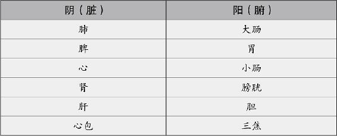
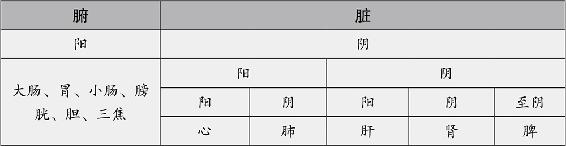

分清人体体质，一补一个准
在进行健康讲座时，我经常问大家一个问题：药店里治什么病的药都有，为什么我们还要去看医生？
很多人会回答：“因为我们不确定自己得了什么病啊。”
说得没错。要治病，首先得诊病。食补也是一样的，再好的东西，如果不适合你，也会变成毒药。要搞清楚吃什么好，首先得搞清楚自己是什么体质。然而，好多朋友感到最困惑的，就是不知道怎么辨别自己的体质。教你一招最容易入手的方法，先从阴阳上分。人分阴阳，人体分阴阳，人的五脏六腑分阴阳，人的病也分阴阳。女怕伤阴，男怕伤阳。
人怎么分阴阳？这个问题你不用想就能回答：女为阴，男为阳嘛。但它对于养生的意义是什么，你想过吗？
女为阴，男为阳。从养生的角度来看，就是女子以阴为根本，男子以阳为根本。所以，女性最怕伤阴，男性最怕伤阳。仅此一个男女之别，食补的重点就有所不同了。
如果你身体不错，那么不需要吃什么补药，女性注意补充一些助阳的食物，男性注意补充一些滋阴的食物，就能锦上添花，弥补先天的偏性。
身体不太好的朋友，不管你得的是阳虚病还是阴虚病，在调理的时候，女性一定要兼顾养阴，男性一定要兼顾养阳。
血属阴，气属阳，所以女性要注意补血，男性要注意补气。
你看古代的宫廷御方，为什么给皇后吃的多是燕窝、阿胶之类滋阴的东西，给皇帝吃的多是人参、鹿茸这些壮阳的东西，就是这个道理。
营养人体的物质为阴，促进人体功能的能量为阳
人体怎么分阴阳？
人体内滋润和营养全身的物质为阴，温煦血液和促进人体功能的能量为阳。
常看中医的人，会听到医生诊断的时候提到什么阴虚火旺啊，肾阴亏虚啊，命门火衰啊。听起来很玄，其实，这些不过是中医用的一些专业术语罢了。其中的道理，离不开阴阳二者的基本特点。只要你抓住这些特点，理解起来就不难了。
人体的阴，就像地上的土和水，起营养和滋润的作用。人的骨髓、血液、津液，都是阴。阴虚的人，身体的体液不足，他们会感到口干舌燥，还会上虚火，这就叫阴虚火旺。
人体的阳，就像天上的阳光和空气，起推动和温热的作用。人的气息、热量、活力，都是阳。阳虚的人，身体的能量不足，血液流动缓慢，他们会感到全身冰凉，怕冷，有气无力。什么叫命门火衰？命门是肾，火是阳，其实就是严重的肾阳虚。
了解了五脏六腑的阴阳，就找到了食补的捷径
人的五脏六腑怎么分阴阳？
心、肝、脾、肺、肾属阴，胆、胃、膀胱、大肠、小肠、三焦这六腑属阳。
为什么五脏属阴，六腑属阳？因为五脏主藏，六腑主泻。从它们的形状上就可以看出来。五脏都是实体，而六腑都是空腔，像容器一样。
五脏的功能是存储营养，维持人体的生命活动，中医说五脏是“藏而不泻”，就是说它们藏着人体的精气，不能外泻，否则人就虚了。
六腑的功能是消化、传导，负责分解食物，给人体吸收营养，排出剩下的废物。它们是营养物质的通道，所以中医说六腑是“泻而不藏”，就是说它们的作用是传送而不是贮存，要保持畅通才好。
了解了五脏六腑的阴阳，就找到了食补的捷径。
五脏主藏，所以我们对它们要多用“补”法；六腑主泻，所以我们对它们要多用“泻”法。
那么，这里就有一个现成的捷径可走了——当你要调理五脏中的某一脏，直接用泻法不见效，就可以在跟它阴阳相对应的那个腑下功夫；同样地，当你要调理六腑中的某一腑，也可以补跟它阴阳相对应的那一脏。
举个例子，肾和膀胱是一对阴阳关系，假如得了肾盂肾炎，这是有湿热，怎么泻？肾不宜泻，一泻就肾虚了。应该泻膀胱，把湿热从膀胱赶出去。再比如，老年人夜尿多，这是虚证，要用补法，小便是膀胱负责的事儿，可膀胱是管排泄的，没法补，你听说过哪味药是补膀胱的吗？所以只能是补肾，才能治标。
五脏六腑的阴阳分别都可以配对。肺为阴，大肠为阳，这是第一对；脾为阴，胃为阳，这是第二对；心为阴，小肠为阳，这是第三对；肾为阴，膀胱为阳，这是第四对；肝为阴，胆为阳，这是第五对；心包为阴，三焦为阳，这是第六对。这种配对关系，也就是经络学所说的脏腑表里相合。
记住脏腑之间的阴阳关系，我们就不会头痛医头、脚痛医脚了。

为什么进补首选脾和肾
为什么古人要说“肾为先天之本，脾为后天之本”？因为它们在五脏中是“阴中之阴”。
人体的阴阳可以无限地细分下去，五脏相对于六腑来说属阴，但它们自身之间也有偏阴偏阳之分。
如果在五脏之中分阴阳，那么它们可以分为两组——心、肺是一组，属阳；肝、肾、脾是一组，属阴。
说起来似乎有些复杂，列个表你就清楚了。

从这个表你可以看出，在五脏中，心肺是一对阴阳，肝肾是一对阴阳。它们可以相互影响。
心、肺这一对阴阳中，心为阳中之阳，肺为阳中之阴。有一类心脏病叫作肺心病，是由于肺的问题引起的心脏病。病人会咳喘、气短、胸闷、心悸，肺和心都出现问题。这种心脏病，就要通过补肺气来补心。
肝肾这一对阴阳中，肝为阴中之阳，肾为阴中之阴。现在以补肾为主打的保健品特别好卖。其实，补肾的第一步是别伤肝，保肝就等于补肾，补肾不一定都是吃补药，泻肝火、引火归原，也是补肾。
在这个表中还可以看到，如果按从偏阳到偏阴的程度排序，那么五脏中依次是心、肺、肝、肾、脾。最偏阴的是脾。
脾为阴中之至阴，那我们就知道它不太容易阴虚，而容易阳虚。所以补脾要以温补脾阳为主。
最关键的一点，你有没有发现？五脏在人体属阴，而其中肾又为阴中之阴，脾为阴中之至阴。
阴主藏，凡是属阴的脏腑，都是负责贮存精气的。因此，五脏六腑中，脾和肾“藏”精气的功能最突出。
脾是管消化的，所以它藏的精气是人体后天之精，就是营养。
肾是管生殖的，所以它藏的精气是人体先天之精，就是元气。
越是属阴的脏腑，越适宜多用“补”法。那么，如果我们平常要进补，重点应该补哪里呢？我想你现在已经知道答案了：当然就是脾和肾。这两脏补好了，其他的脏腑就不容易生病了。

陈老师，我非常喜欢你。以前我总贫血，看过各大医院专家，吃药就好，不吃就贫血。自从吃了你给的健脾方后便好了，已经5年没贫血了。非常感谢你，期待你的新书。
——江上彩虹